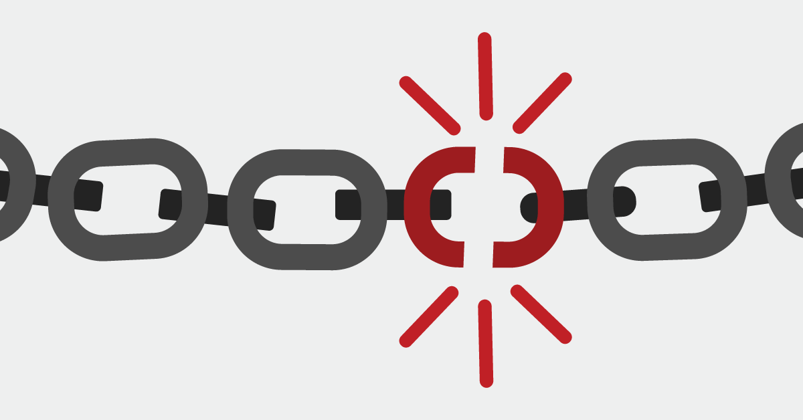

Malware attack
Attacks use many methods to get malware into a user's device. Users may be asked to take an action, such as clicking a link or opening an attachment.
Once malware is installed, it can monitor user activities, send confidential data to the attacker, assist the attacker in penetrating other targets within the network, and even cause the user’s device to participate in a botnet leveraged by the attacker for malicious intent.
Malware attacks include:
Trojan virus — tricks a user into thinking it is a harmless file, but it can launch an attack on a system and can establish a backdoor, which attackers can use.
Ransomware — prevents access to the data of the victim and threatens to delete or publish it unless a ransom is paid.
Worms — this malware is designed to exploit backdoors and vulnerabilities to gain unauthorized access to operating systems.
Spyware — this malware enables malicious actors to gain unauthorized access to data, including sensitive information like payment details and credentials.
Once malware is installed, it can monitor user activities, send confidential data to the attacker, assist the attacker in penetrating other targets within the network, and even cause the user’s device to participate in a botnet leveraged by the attacker for malicious intent.
Malware attacks include:
Trojan virus — tricks a user into thinking it is a harmless file, but it can launch an attack on a system and can establish a backdoor, which attackers can use.
Ransomware — prevents access to the data of the victim and threatens to delete or publish it unless a ransom is paid.
Worms — this malware is designed to exploit backdoors and vulnerabilities to gain unauthorized access to operating systems.
Spyware — this malware enables malicious actors to gain unauthorized access to data, including sensitive information like payment details and credentials.
Social engineering attacks
Social engineering attacks work by psychologically manipulating users into performing actions desirable to an attacker, or divulging sensitive information.
Social engineering attacks include:
Phishing — attackers send fraudulent correspondence that seems to come from legitimate sources, usually via email, leading them to hand over sensitive information to the attacker, or expose themselves to malicious downloads.
Malvertising — online advertising controlled by hackers, which contains malicious code that infects a user’s computer when they click, or even just view the ad.
Scareware — a threat actor tricks the victim into thinking that their computer is infected with malware. Then, offers the victim a solution to fix the fake problem, tricking them into installing malware.
Honey trap — a social engineer assumes a fake identity as an attractive person to interact with a target online. The social engineer fakes an online relationship and gathers sensitive information through this relationship.
Social engineering attacks include:
Phishing — attackers send fraudulent correspondence that seems to come from legitimate sources, usually via email, leading them to hand over sensitive information to the attacker, or expose themselves to malicious downloads.
Malvertising — online advertising controlled by hackers, which contains malicious code that infects a user’s computer when they click, or even just view the ad.
Scareware — a threat actor tricks the victim into thinking that their computer is infected with malware. Then, offers the victim a solution to fix the fake problem, tricking them into installing malware.
Honey trap — a social engineer assumes a fake identity as an attractive person to interact with a target online. The social engineer fakes an online relationship and gathers sensitive information through this relationship.

Software supply chain attacks
A software supply chain attack is a cyber attack against an organization that targets weak links in its trusted software update and supply chain. A supply chain is the network of all individuals, organizations, resources, activities, and technologies involved in the creation and sale of a product. A software supply chain attack exploits the trust that organizations have in their third-party vendors, particularly in updates and patching.
Types of software supply chain attacks:
> Compromise of software build tools or dev/test infrastructure
> Compromise of devices or accounts owned by privileged third-party vendors
> Malicious apps signed with stolen code signing certificates or developer IDs
> Malicious code deployed on hardware or firmware components
> Malware pre-installed on devices such as cameras, USBs, and mobile phones
Types of software supply chain attacks:
> Compromise of software build tools or dev/test infrastructure
> Compromise of devices or accounts owned by privileged third-party vendors
> Malicious apps signed with stolen code signing certificates or developer IDs
> Malicious code deployed on hardware or firmware components
> Malware pre-installed on devices such as cameras, USBs, and mobile phones
Advanced persistent threats (APT)
When an individual or group gains unauthorized access to a network and remains undiscovered for an extended period of time, attackers may exfiltrate sensitive data, deliberately avoiding detection by the organization’s security staff. APTs require sophisticated attackers and involve major efforts.
Common indicators of an APT presence include:
New account creation — the P in Persistent comes from an attacker creating an identity or credential on the network with elevated privileges.
Abnormal activity — legitimate user accounts typically perform in patterns. Abnormal activity on these accounts can indicate an APT is occurring.
Backdoor/trojan horse malware — use of this method enables APTs to maintain long-term access.
Odd database activity — for example, a sudden increase in database operations with massive amounts of data.
Unusual data files — the presence of these files can indicate data has been bundled into files to assist in an exfiltration process.
Common indicators of an APT presence include:
New account creation — the P in Persistent comes from an attacker creating an identity or credential on the network with elevated privileges.
Abnormal activity — legitimate user accounts typically perform in patterns. Abnormal activity on these accounts can indicate an APT is occurring.
Backdoor/trojan horse malware — use of this method enables APTs to maintain long-term access.
Odd database activity — for example, a sudden increase in database operations with massive amounts of data.
Unusual data files — the presence of these files can indicate data has been bundled into files to assist in an exfiltration process.
Distributed denial of service (DDoS)
The objective of a denial of service (DoS) attack is to overwhelm the resources of a target system and cause it to stop functioning, denying access to its users. Distributed denial of service (DDoS) is a variant of DoS in which attackers compromise a large number of computers or other devices, and use them in a coordinated attack against the target system.
Methods of DDoS attacks include:
Botnets — systems under hacker control that have been infected with malware. Attackers use these bots to carry out DDoS attacks. Large botnets can include millions of devices and can launch attacks at devastating scale.
Smurf attack — sends Internet Control Message Protocol (ICMP) echo requests to the victims IP address. The ICMP requests are generated from ‘spoofed’ IP addresses. Attackers automate this process and perform it at scale to overwhelm a target system.
TCP SYN flood attack — attacks flood the target system with connection requests. When the target system attempts to complete the connection, the attacker’s device does not respond, forcing the target system to time out. This quickly fills the connection queue, preventing legitimate users from connecting.
Methods of DDoS attacks include:
Botnets — systems under hacker control that have been infected with malware. Attackers use these bots to carry out DDoS attacks. Large botnets can include millions of devices and can launch attacks at devastating scale.
Smurf attack — sends Internet Control Message Protocol (ICMP) echo requests to the victims IP address. The ICMP requests are generated from ‘spoofed’ IP addresses. Attackers automate this process and perform it at scale to overwhelm a target system.
TCP SYN flood attack — attacks flood the target system with connection requests. When the target system attempts to complete the connection, the attacker’s device does not respond, forcing the target system to time out. This quickly fills the connection queue, preventing legitimate users from connecting.

Man-in-the-middle attack (MitM)
Attackers intercept an existing conversation or data transfer, either by eavesdropping or by pretending to be a legitimate participant. To the victim, it will appear
as though a standard exchange of information is underway — but by inserting themselves into the “middle” of the conversation
or data transfer, the attacker can quietly hijack information.
MitM attacks include:
Session hijacking — an attacker hijacks a session between a network server and a client. The server believes it is corresponding with the client and continues the session.
Replay attack — a cybercriminal eavesdrops on network communication and replays messages at a later time, pretending to be the user. Replay attacks have been largely mitigated by adding timestamps to network communications.
Eavesdropping attack — attackers leverage insecure network communication to access information transmitted between the client and server. These attacks are difficult to detect because network transmissions appear to act normally.
MitM attacks include:
Session hijacking — an attacker hijacks a session between a network server and a client. The server believes it is corresponding with the client and continues the session.
Replay attack — a cybercriminal eavesdrops on network communication and replays messages at a later time, pretending to be the user. Replay attacks have been largely mitigated by adding timestamps to network communications.
Eavesdropping attack — attackers leverage insecure network communication to access information transmitted between the client and server. These attacks are difficult to detect because network transmissions appear to act normally.
Password attacks
A hacker can gain access to the password information of an individual by ‘sniffing’ the connection to the network, using social engineering, guessing, or gaining access to a password database. An attacker can ‘guess’ a password in a random or systematic way.
Password attacks include:
Brute-force password guessing — an attacker uses software to try many different passwords, in hopes of guessing the correct one. The software can use some logic to trying passwords related to the name of the individual, their job, their family, etc.
Dictionary attack — a dictionary of common passwords is used to gain access to the computer and network of the victim.
Pass-the-hash attack — an attacker exploits the authentication protocol in a session and captures a password hash (as opposed to the password characters directly) and then passes it through for authentication and lateral access to other networked systems.
Password attacks include:
Brute-force password guessing — an attacker uses software to try many different passwords, in hopes of guessing the correct one. The software can use some logic to trying passwords related to the name of the individual, their job, their family, etc.
Dictionary attack — a dictionary of common passwords is used to gain access to the computer and network of the victim.
Pass-the-hash attack — an attacker exploits the authentication protocol in a session and captures a password hash (as opposed to the password characters directly) and then passes it through for authentication and lateral access to other networked systems.